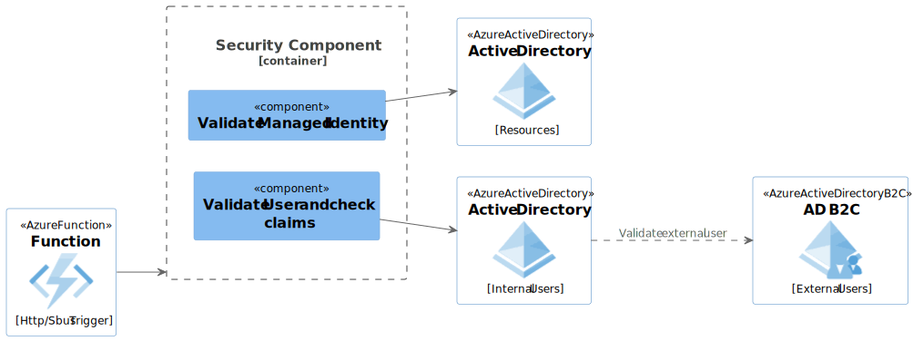

7 Security Component

7.1 Managed Identity
The Header of any incoming message will contain 2 header keys IDENTITY_ENDPOINT and IDENTITY_HEADER they sometimes appear under there alias names MSI_ENDPOINT and MSI_HEADER.
7.1.1 Retrieve the MI token
Use the DefaultAzureCredential to obtain the token for the managed identity.
var credential = new DefaultAzureCredential();
var token = await credential.GetTokenAsync(new TokenRequestContext(new[] { "https://management.azure.com/.default" }));7.1.2 Validate the token
Use the Microsoft.IdentityModel.Tokens library to validate the token. This involves checking the token’s signature, issuer, audience, and expiration.
using Microsoft.IdentityModel.Tokens;
using System.IdentityModel.Tokens.Jwt;
public bool ValidateToken(string token)
{
var tokenHandler = new JwtSecurityTokenHandler();
var validationParameters = new TokenValidationParameters
{
ValidateIssuer = true,
ValidIssuer = "https://sts.windows.net/{tenant-id}/",
ValidateAudience = true,
ValidAudience = "https://management.azure.com/",
ValidateLifetime = true,
IssuerSigningKeyResolver = (token, securityToken, kid, parameters) =>
{
// Retrieve signing keys from Azure AD
var discoveryDocument = "https://login.microsoftonline.com/{tenant-id}/v2.0/.well-known/openid-configuration";
var keys = new JsonWebKeySet(discoveryDocument).GetSigningKeys();
return keys;
}
};
try
{
tokenHandler.ValidateToken(token, validationParameters, out SecurityToken validatedToken);
return true;
}
catch
{
return false;
}
}7.1.4 Function Code
By combining the above snippets, you would be able to check and authorise the calling application.
public static async Task<IActionResult> Run(HttpRequest req, ILogger log)
{
var token = req.Headers["Authorization"].ToString().Replace("Bearer ", "");
if (!ValidateToken(token))
{
return new UnauthorizedResult();
}
// Proceed with your function logic
return new OkResult();
}7.2 User Authentication
N.B. If a User token is included in the header then check the user is authorised.
Use the Microsoft.Identity.Web library to handle authentication and authorization in your function.
using Microsoft.AspNetCore.Mvc;
using Microsoft.Azure.WebJobs;
using Microsoft.Azure.WebJobs.Extensions.Http;
using Microsoft.AspNetCore.Http;
using Microsoft.Extensions.Logging;
using Microsoft.Identity.Web;
using System.Threading.Tasks;
public static class MyFunction
{
[FunctionName("MyFunction")]
public static async Task<IActionResult> Run(
[HttpTrigger(AuthorizationLevel.Function, "get", "post", Route = null)] HttpRequest req,
ILogger log)
{
var user = req.HttpContext.User;
if (!user.Identity.IsAuthenticated)
{
return new UnauthorizedResult();
}
// Check for specific roles or claims
if (!user.IsInRole("YourRequiredRole"))
{
return new ForbidResult();
}
// Proceed with your function logic
return new OkObjectResult("User is authorized");
}
}